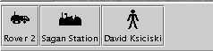

Mars Simulation Project
|
|  |
| Figure 3: Unit Bar |
The unit bar (figure 3) contains buttons to open reduced unit info windows or bring open unit info windows to the front of the desktop. Whenever a unit info window is opened, a corresponding unit button is created in the unit bar.
Every unit info window has a reduce button and a destroy button in the upper right. The reduce button will remove the window from the desktop but the unit button will stay in the unit bar. The destroy button will remove the window from the desktop and the unit button from the unit bar.
Please send questions or comments to mars-sim-users@lists.sourceforge.net
Mars Simulation Project copyright © Scott Davis, 2008
Map data courtesy of NASA Jet Propulsion Laboratory